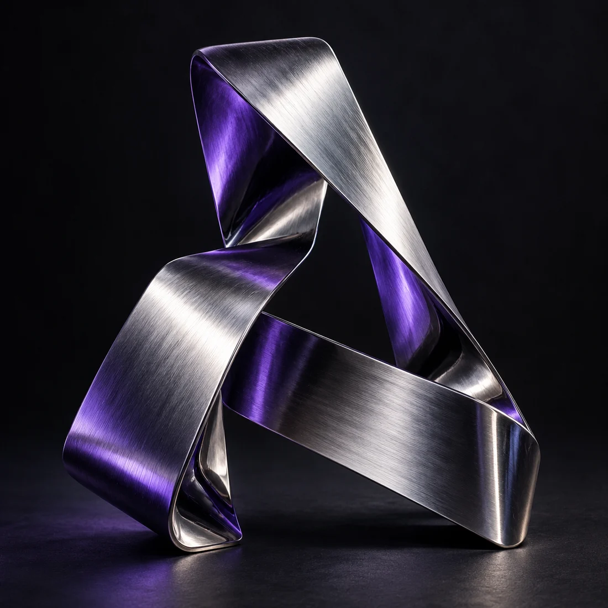

Ideias que viram
experiências digitais.
Desenvolvimento de sites, interfaces e soluções web pensadas para apresentar negócios, organizar processos e transformar necessidades em produtos digitais funcionais.

O que posso
desenvolver.
Soluções completas para apresentar negócios, organizar processos e criar experiências digitais funcionais.
Sites institucionais
Sites profissionais para apresentar empresas, profissionais, serviços, projetos e marcas na internet com layout moderno, boa legibilidade e estrutura semântica.
Sistemas web
Interfaces e aplicações dinâmicas para organizar informações, usuários, permissões, históricos e rotinas de processos em um ambiente centralizado.
Interfaces responsivas
Experiências fluidas adaptadas com precisão para computadores, notebooks, tablets e smartphones, priorizando conforto de uso e clareza visual.
Front-end moderno
Implementação de código limpo, modular e de fácil manutenção, com componentes reutilizáveis, integrações e foco em desempenho.
Design gráfico
Materiais visuais voltados para comunicação digital, banners de divulgação, eventos, identidade visual e composições gráficas para produtos físicos.
Tem um projeto em mente?
Se você precisa de uma solução sob medida ou deseja entender como colocar sua ideia na web, vamos conversar e definir a melhor proposta técnica.
Da necessidade
para a solução.
Projetos desenvolvidos para transformar ideias e necessidades reais em experiências digitais claras, funcionais e bem estruturadas.
R.S. Top Team
Sistema de gestão · Desenvolvimento web
Sistema desenvolvido para centralizar alunos, professores, turmas, eventos, graduações, presenças e informações financeiras de uma academia.
MHouse Fit
Site institucional · Interface
Site institucional desenvolvido para apresentar a academia, seus serviços e informações essenciais através de uma experiência digital simples, visual e acessível.
Instagram DM Downloader
JavaScript · Extensão
Extensão desenvolvida para facilitar o download de imagens e vídeos recebidos através das mensagens diretas do Instagram Web.
Atlas Gestão
Desenvolvimento Web · SaaS
Plataforma de gestão desenvolvida para centralizar processos de academias, separando organizações, usuários, permissões e informações.
Tecnologia a serviço
de uma necessidade.
Atlas Cretive,
desenvolvedor front-end
e designer.
Desenvolvo soluções digitais combinando desenvolvimento web, interface e design para transformar necessidades de projetos e negócios em produtos claros, funcionais e fáceis de utilizar.
Cada projeto começa pela compreensão do problema. A tecnologia vem depois, como ferramenta para construir a solução adequada. Meu trabalho envolve desde sites institucionais e interfaces até aplicações web voltadas à organização de processos e informações.
Compreender antes de codificar.
A escolha técnica e a estrutura de telas sempre acompanham o objetivo prático de quem vai utilizar o sistema ou acessar a página.
Engenharia com atenção visual.
União de código modular, semântica web e boas práticas de interface para entregar produtos fáceis de manter e navegar.
Construção transparente.
Aplicações com documentação clara, arquitetura verificável e respeito aos requisitos de cada projeto.
Compromisso com soluções reais, comunicação direta e foco em resultados funcionais para clientes e parceiros.
HTML
Estrutura e semântica webCSS
Interfaces e responsividadeJavaScript
Comportamento e dinamismoReact
Arquitetura de componentesFirebase
Autenticação e dadosCanva + Affinity
Criação e comunicação visualDesign para
comunicar melhor.
Além do desenvolvimento web, trabalho com criação visual aplicada à comunicação de projetos, negócios e organizações.
para vestir.
Artes para produtos e vestuário.
Desenvolvimento de conceitos e composições gráficas aplicadas a camisetas e materiais físicos, explorando equilíbrio entre mensagem, cores e estética.
As peças originais serão adicionadas à seleção.
com propósito.
Comunicação visual com propósito.
Exploração de tipografia, cores, composição e elementos gráficos para dar consistência e personalidade à comunicação de uma marca, projeto ou negócio.
Uma solução começa
entendendo o problema.
Um site não precisa apenas parecer bom. Ele precisa comunicar, funcionar corretamente e ajudar quem está do outro lado a encontrar informações, executar uma tarefa ou entrar em contato.
Por isso, desenvolvimento e design fazem parte do mesmo processo: entender uma necessidade e transformá-la em uma experiência digital funcional.